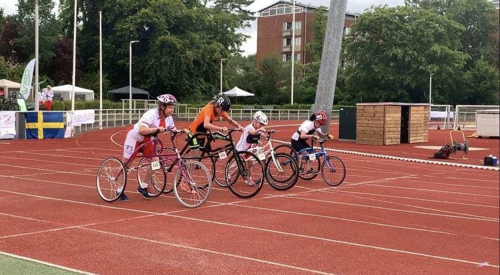
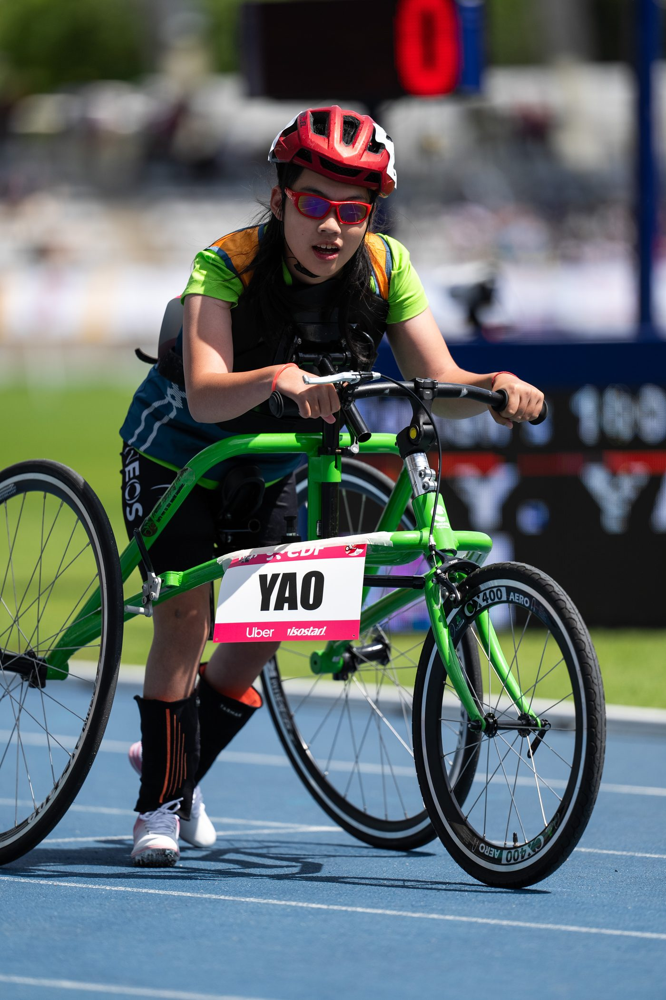
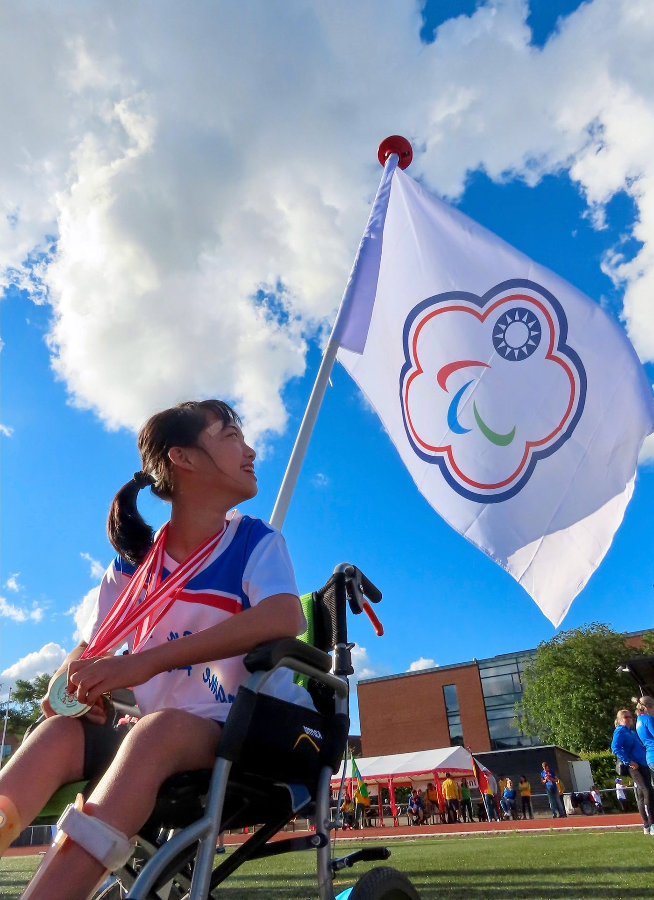

01我的故事
競速甜心-姚宥米
『我不會走路，但我會跑步，而且可以跑向全世界』
I can't walk, but I can run, and run to the world.
出生於29週早產，僅1350公克，因腦室白質軟化症導致腦性麻痺，至今無法自行行走。幼年起便與復健、醫療密不可分，甚至在3歲時因肺炎插管並使用葉克膜，一度在生死邊緣徘徊。
在2018年，我接觸到腦麻專用的框架競速跑步車（Frame Runner），2022年，自費遠赴丹麥參加 Frame Running 訓練營，並意外站上國際賽場，奪下三面短跑金牌，成為亞洲首位參賽並獲獎的選手。迄今，我累積8金2銀2銅，自費參加過世界帕拉田徑賽、世界能力運動會等賽事，2024年世界排名第11。
當拿下第一面獎牌，我就夢想有一天能站上帕奧殿堂，但出國比賽與移地訓練需要有足夠的經費支持，平日需要的營養費用與練習後的累積起來的肌肉緊繃的放鬆，也需要昂貴的費用支撐，更不用說專業型的競技設備，希望能有足夠的支撐，可以以賽代訓，奪取更好的排名。


